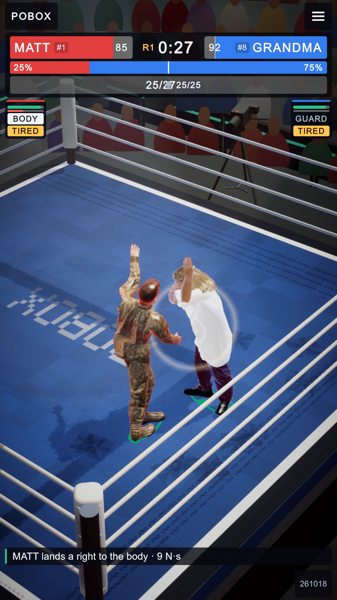
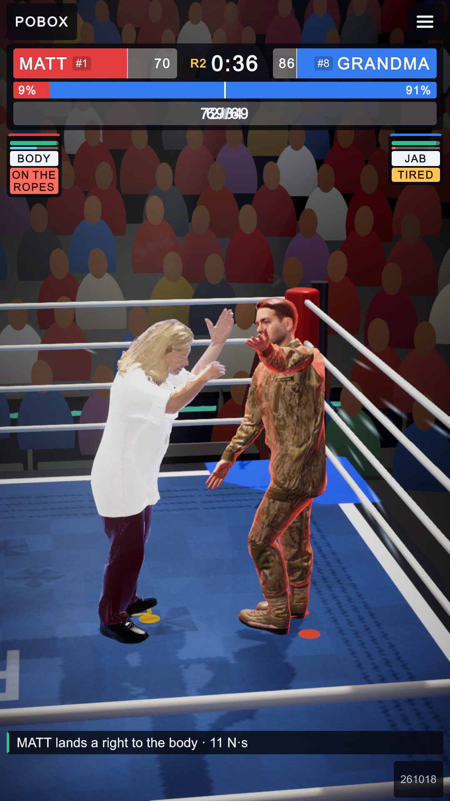
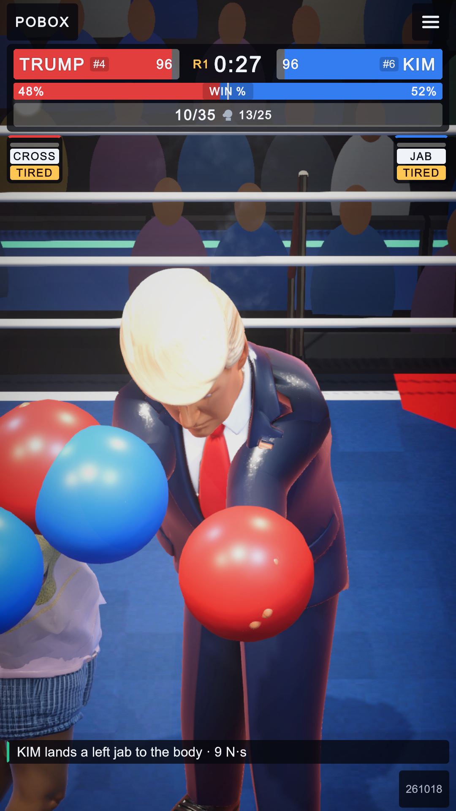
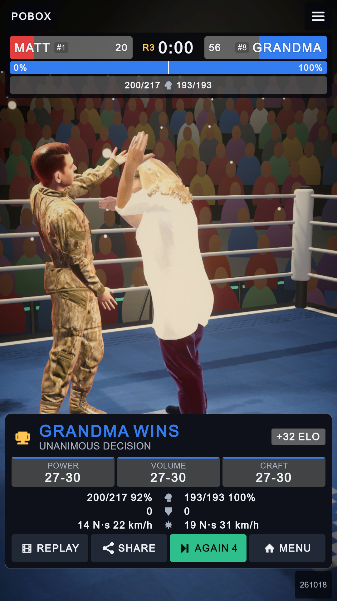
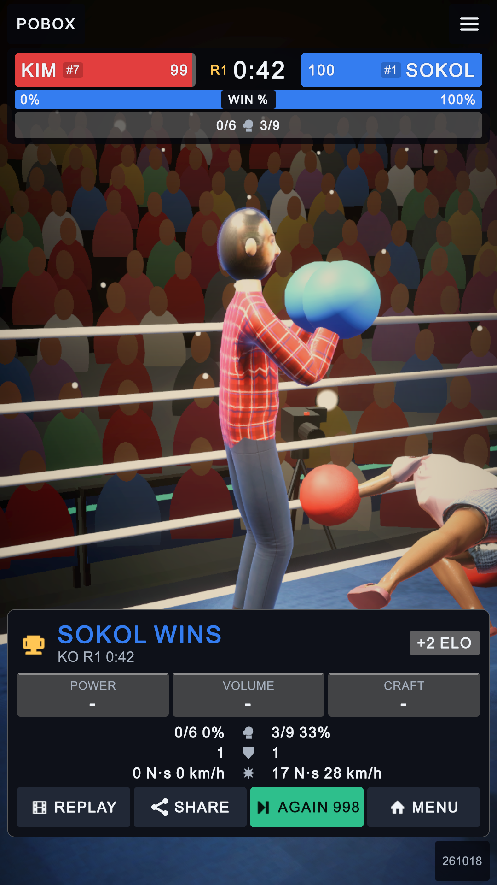

Review fixes: the HUD
2026-10-18 · captured at 1080×1920 in the editor (DevTools shot-begin / shot-end) · layout audit clean on every screen after
In short. The punch tape no longer draws its two counts over each other, the win bar says what it is, the tank and TIRED read the
reserve that really weakens the drives. (The gloves in the after shots were put on in error and are off again: the owner took them off on 2026-10-14.) Punches that miss and punches stopped on the gloves now
count, so accuracy reads 15-45% instead of 92-100%.
The punch tape and the win bar

counts run through the fist icon
no label: reads as damage
.pop) and are stretched to half the chip each, so the text crosses the icon.
both counts on top of each other

each count in its own half, swelling from the icon side
WIN %
TIRED: the reserve under a quarter
stat-half box; the bar has a solid “WIN %” pill (Excitement.RedShare, red's chance of winning).The result card

92% and 100% landed, 0 blocked
VOLUME 27-30 to the one who landed less

misses and blocks counted
Changed files
Assets/UI/Hud.uxml,Assets/UI/Theme.uss: tape halves, WIN % pill, single tank bar.Assets/Scripts/Runtime/UI/HudView.cs: tank and TIRED from MjBoxer.Reserve; a drawn cup bout's rematch counts; HUD rebuilds a late UI tree; the ELO line names red on a draw.Assets/Scripts/Runtime/UI/MenuView.cs: ALL dims the cards and shows busy, as FIGHT does.